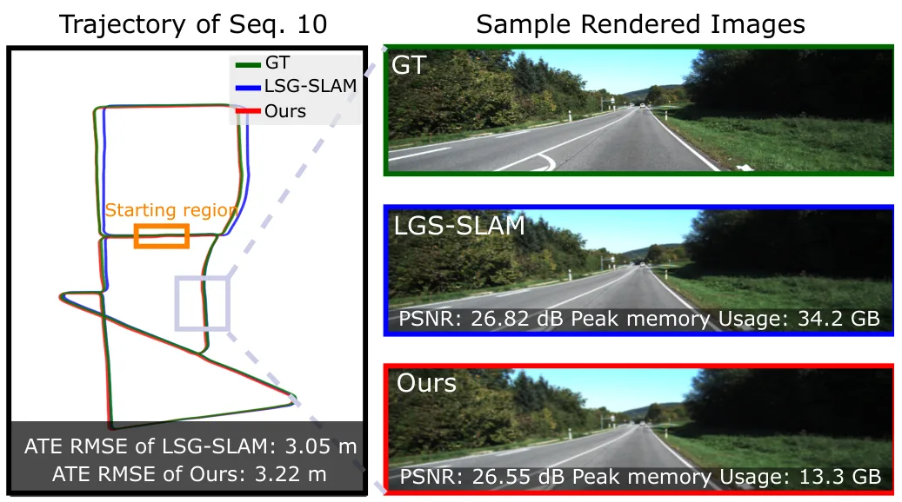
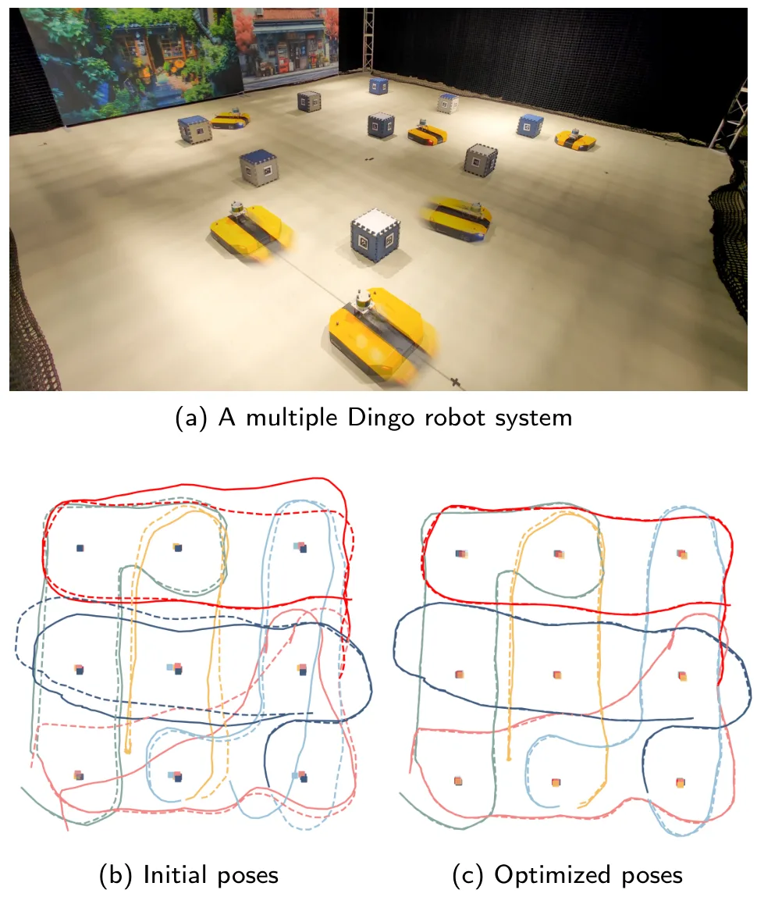
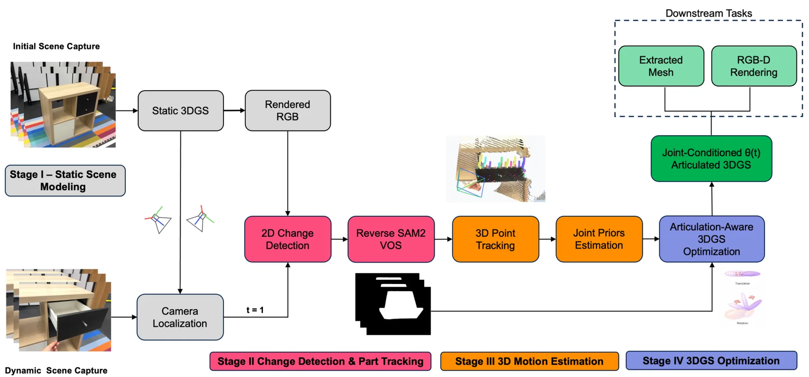
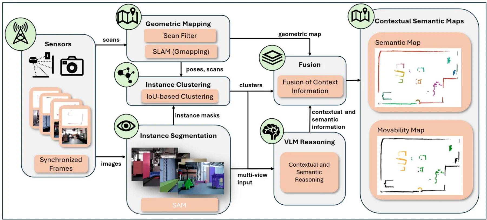
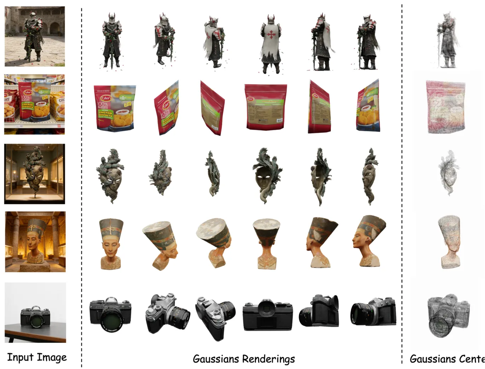
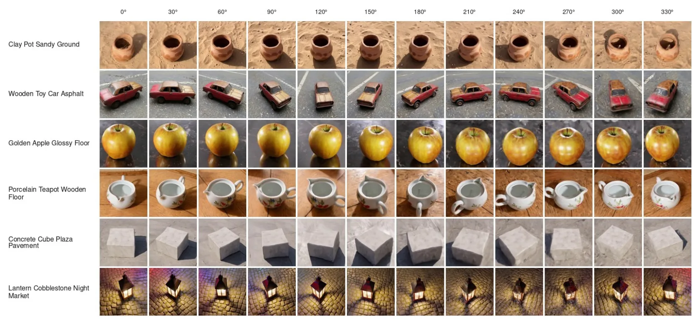
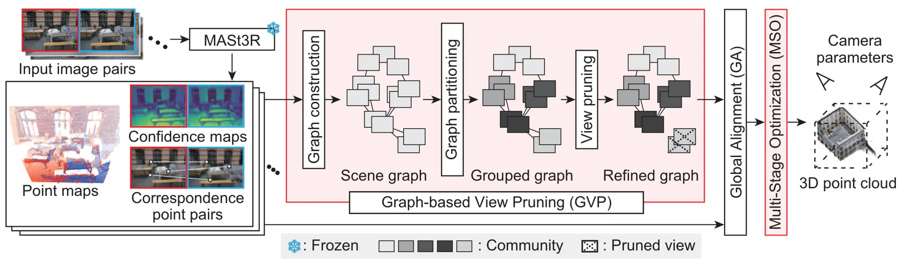

新论文 · 日期 2026-06-24 · score 17 · cs.CV
作者：Leshu Li, Jie Peng, Yang Zhao
评分 9.3/10
3DGS-SLAM内存剪枝实时建图自动驾驶
一句话工作总结：用对有效渲染区域的贡献来剪枝高斯点，在保持 3DGS-SLAM 精度的同时显著降低运行内存并提升帧率。
3D Gaussian Splatting 已被广泛用于 SLAM 中的细粒度几何表示和新视角渲染，但在大尺度场景中，高斯点会随时间不断积累，导致峰值内存持续上升并限制实时部署。Pocket-SLAM 提出 rendering-area-aware pruning：不再只依赖 opacity、gradient magnitude 等单个高斯层面的启发式，而是根据高斯对有效渲染区域的贡献来选择性删除冗余点。作者在 E…
3D Gaussian Splatting (3DGS) has garnered significant attention in Simultaneous Localization and Mapping (SLAM) due to its advances in capturing fine-grained geometry features and synthesizing novel views. For…

新论文 · 日期 2026-06-23 · score 17 · cs.RO
作者：Yixian Zhao, Yan Huang, Yang Xu, Liang Li
评分 8.9/10
多机器人 SLAM对象级地图去中心化 PGO黎曼优化
一句话工作总结：用 consensus 与近似 Newton 的去中心化黎曼优化，处理对象级多机器人 SLAM 中机器人轨迹与物体位姿的强耦合估计。
对象级多机器人 SLAM 后端需要同时估计多台机器人轨迹和跨机器人观测到的持久物体位姿，耦合程度高；而现实通信拓扑又可能稀疏、间歇或随时间变化。本文提出完全去中心化的对象级多机器人 PGO 黎曼优化框架，通过 consensus 机制解耦联合估计问题，使通信拓扑不必严格等同于物理交互拓扑。作者进一步设计利用局部二阶信息的分布式近似 Newton 方案，直接在 SE(d) 流形上优化以保持几何一致性，并给出收敛到黎曼…
Pose graph optimization (PGO) is a key back-end component for state estimation in networked multi-robot simultaneous localization and mapping (SLAM). In object-based multi-robot SLAM, the problem becomes more…

新论文 · 日期 2026-06-23 · score 15 · cs.RO, cs.CV
作者：Pranjal Mishra, René Zurbrügg, Max Wilder-Smith, Marco Hutter
评分 8.2/10
3DGSRGB-D 重建数字孪生铰接物体
一句话工作总结：从真实 RGB-D 视频中结合 3DGS 与无监督关节发现，恢复可渲染、可查询、可操作的铰接物体数字孪生。
ArtiTwinSplat 面向机器人在非结构化真实环境中的物体建模，目标是无需 CAD、仿真资产或人工标注，直接从 RGB-D 视频构建可交互、照片级真实的铰接物体数字孪生。方法以 3D Gaussian Splatting 保持几何和光度细节，并结合无监督 articulation discovery，从观测运动中恢复部件结构和关节运动学。通过 tracking 与 optimization 阶段，输出支持实时…
Deploying robots in unstructured real-world environments needs accurate, interactive models of the objects. Constructing these models at scale remains a critical bottleneck for robotic system integration. We p…

新论文 · 日期 2026-06-24 · score 12 · cs.RO
作者：Marvin Rüdt, Hao Pang, Constantin Enke, Zäzilia Seibold
评分 7.5/10
语义地图VLMSAM移动机器人
一句话工作总结：在 SLAM 几何地图上叠加 SAM 分割、跨视角聚类和 VLM 推理，构建包含物体类别与可移动性属性的语义地图。
该工作针对内部物流环境中的移动机器人，提出结合 SLAM 几何地图、SAM 实例分割、实例聚类和 VLM 多视图推理的上下文语义地图 pipeline。系统在零样本、开放词汇设置下聚合多视角观测，让 VLM 推断物体类别及可移动性等上下文属性，而不需要任务特定训练或预定义类别。实验比较三种 VLM 和两种 prompt 策略，报告语义分类 98.93% mIoU、物体可移动性估计 89.17% mAcc；组件分析显…
Autonomous mobile robots operating in intralogistics environments rely on geometric maps for localization and navigation, but lack semantic understanding of objects and their contextual properties. We present…

新论文 · 日期 2026-06-24 · score 10 · cs.CV
作者：Chenrui Fan, Paolo Favaro
评分 6.8/10
三维一致性评测T2V3DGS重建诊断
一句话工作总结：把生成视频当成多视角采集序列，用几何估计与 3DGS 重建 profile 诊断其是否具备真实静态三维一致性。
Camera-prompted 文本到视频模型可生成环绕物体或穿越静态场景的视频，但视觉上合理不代表帧间真的对应同一个刚性三维场景。GeoT2V-Bench 提出基于重建的诊断 benchmark：先估计每帧相机内参与位姿，拟合 DeformableGS，再通过时间中位数聚合得到静态 MedianGS 代理，并沿估计相机路径重渲染。它不输出单一通过/失败标签，而是报告图像运动、轨迹行为、静态渲染误差、flow ag…
Camera-prompted text-to-video (T2V) models are increasingly used to synthesize virtual camera captures, such as orbiting objects or moving through static scenes. For these outputs, visual plausibility is insuf…

新论文 · 日期 2026-06-24 · score 9 · cs.CV, cs.AI
作者：Haorui Ji, Weizhe Liu, Hongdong Li, Hengkai Guo
评分 6.6/10
Image-to-3D3DGS扩散模型稀疏表示
一句话工作总结：通过扩散对齐结构化 latent 和稀疏结构感知 DiT，提高 image-to-3DGS 生成中的细节保真与 2D-3D 对齐。
现有基于稀疏 voxel 的 image-to-3DGS 方法在输入图像高频细节保持上存在瓶颈：一是构建稀疏 latent 时常使用偏语义抽象的判别式 2D 特征，削弱重建线索；二是生成阶段标准 diffusion transformer 难以将密集 2D 图像 token 与稀疏 3D voxel latent 对齐。FLUX3D 提出 Diffusion-Aligned Structured Latents 与…
Sparse voxel representation has emerged as a scalable foundation for image-to-3D Gaussian Splatting (3DGS) generation, yet current methods struggle to preserve high-frequency visual details of input images due…

新论文 · 日期 2026-06-24 · score 9 · cs.CV, cs.AI
作者：Chenrui Fan, Paolo Favaro
评分 7/10
Text-to-3D视频先验3DGS视角覆盖
一句话工作总结：用初始 3DGS 重建检测文本生成视频的缺失视角，再定向补全并重建成闭环 orbit 3DGS 场景。
通用文本到视频模型具有开放世界场景先验，但直接生成的视频通常相机控制困难、视角覆盖不足且帧间不一致。OrbitForge 使用冻结视频先验和逐 prompt 的 Gaussian Splatting 重建优化，将单个文本生成视频转换为标准闭环轨道 3DGS 场景。流程先从第一段生成视频中通过 DeformableGS 和鲁棒 MedianGS 得到初始重建，再按规定 orbit 渲染检测缺失视角，只让 T2V 模型…
Generic text-to-video models can be used as rich open-world scene priors. Despite the high quality of today's generated videos, they do not directly yield reliable 3D assets: camera motion is difficult to cont…

新论文 · 日期 2026-06-22 · score 8 · cs.CV
作者：Toshiki Watanabe, Shintaro Ito, Natsuki Takama, Koichi Ito
评分 8/10
SfMMASt3R视角图剪枝三维重建
一句话工作总结：用场景图剪枝过滤 MASt3R 非重叠误匹配，并通过局部到全局的多阶段优化提升 SfM 位姿和重建鲁棒性。
MASt3R 等新型匹配方法在困难场景中很强，但也容易对非重叠图像对产生错误对应，导致 MASt3R-SfM 等直接把这些匹配输入优化的 pipeline 位姿估计退化。G-MASt3R-SfM 提出两个模块：Graph-based View Pruning 根据匹配置信度构造场景图并几何剪除离群视角；Multi-Stage Optimization 从局部一致性逐步扩展到全局一致性，逐阶段细化相机参数。ETH3D…
Structure from Motion (SfM) is essential for multi-view 3D reconstruction, however, its accuracy heavily relies on the accuracy of image matching. While the recent correspondence matching method, MASt3R, enabl…

新论文 · 日期 2026-06-23 · score 3 · eess.SP
作者：Yinyin Jiao, Huixin Xu, Jianhua Zhang, Yuelong Qiu
评分 5.5/10
GNSS 轨迹多模态数据集无线世界模型LiDAR/Radar
一句话工作总结：发布带 GNSS 轨迹、LiDAR、雷达、图像和双频信道响应对齐的真实校园移动路线多模态数据集。
WiWorld-RealData 是面向 6G digital twin channel 和无线世界模型的真实户外多频信道与多模态感知数据集。数据沿校园移动路线采集，包含 3.7 GHz 和 6.775 GHz 信道冲激响应，以及多视角图像、全景图、LiDAR 点云、毫米波雷达记录和 GNSS 轨迹。数据通过统一文件组织和 metadata manifest 建立 channel response、环境观测、时间戳…
Wireless world models aim to represent, predict, and reason about wireless propagation by jointly understanding physical environments and channel responses. Realizing such models in sixth-generation (6G) digit…